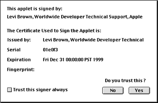

|
|
Applet signing has been the topic of considerable discussion throughout the Java community. Processes and procedures related to the signing of applets are generally complex and sometimes confusing, and users have had issues related to using and signing applets with MRJ. The purpose of this document is to discuss the technology being employed and to clarify the procedures needed to sign jar files, install certificates, and successfully utilize a signed applet.
Updated: [Oct 16 2000]
|
Overview
The applet signing process is based on the public key encryption system, which is based on four fundamental concepts. These four pillars of public key encryption are public/private key pairs, digital certificates, certificate authorities, and encryption algorithms. Key pairs provide a means of exchanging messages, digital certificates ensure the authenticity of both the sender and receiver, the certificate authority ensures the validity of the digital certificates, and encryption algorithms "scramble" the message.
A digital certificate is a software token that serves as a form of identification,similar to the way your driver's license is used to verify identity. Often recognized as a form of electronic signature, the digital certificate is used to authenticate the identity of an individual or corporation. It is the responsibility of the certificate receiver to verify that the sender is legitimate before accepting any risky requests.
A digital signature is a means of applying a digital certificate to a collection of data, thus guaranteeing the originator of the data. Historically, a message was sealed with wax which was stamped with a unique emblem so the receiver of the message could trust the message was actually from the person supposedly sent it. Conceptually, applet signing is much the same, but considerably more secure and reliable. Signing Java
code means applying your digital signature to your completed applet data, class files, image files, data files, etc., stored in the form of a jar file. This mechanism ensures that the origin of your applet can be verified and that it has not been modified since it was signed. Even if it was intercepted while being transmitted, a modified applet will fail the signature-verification process.
Signing your Java applet's code is important because the end user is assured that the code they are running is from the signer, and not some other entity with malicious intent. Additionally, it gives you, the developer, access to additional resources outside of the Java security "sandbox." In general, your code would operate unrestricted as if it were an application on the client machine. Specifically, once signed, your applet can gain access the following functionality:
- Issuing an RMI call to a remote object running on a different server than the applet's
- Executing a client-side program
- Reading from and writing to files stored on the client
- Sending a print job to a local printer
- Accessing the system Clipboard
- Reading the client's system properties (e.g., user name)
- Determining the structure of an object (fields, methods, values, etc.) using the
Reflection API
- and more....
MRJ's implementation of Applet Security uses Sun's standard signed applet mechanism. Sun's javakey tool is used to create certificates, sign jar files, manage the identity database, and perform other related tasks. The javakey tool manages a database containing public/private key pairs and related certificates. In order to sign a jar file with the javakey tool, you need to have a public/private key pair in javakey's database. The javakey tool will look for the database at the location specified by the identity.database property in the security properties file, java.security, located in the MRJ Libraries:lib:security folder in the Extensions folder. By default, the database is a file called "identitydb.obj" and is located in the Preferences folder. The database typically holds
key pairs for many different potential signers, each key pair being associated with the username of a signer. In addition to key pairs, javakey's database contains certificates for the public keys. When a certificate is added to the database, javakey assigns it a unique number for identification purposes.
How To Sign an Applet with Javakey
Getting Started
- Package all your applet-related classes into a JDK 1.1.x-created jar file. Make sure the jar file is generated with a manifest. Let us call this "MyApplet.jar."
- Create a file for your public key. The file need only to exist, as the content will be created later.
- For example, use SimpleText to create a file called "public.key"
- Create a file for your private key. The file need only to exist, as the content will be created later.
- For example, use SimpleText to create a file called "private.key"
Creating the Certification Directive File
You provide certification information to javakey by using a directive file, which is basically a property file that javakey reads when signing a jar file.
Use SimpleText to create a file for our certificate directive information. In this case, we will call it "cert.directive." The contents of the file are shown in listing 1.
# Information about the issuer
#
issuer.name=SpiffyCo
# The certificate to use for the signing (required if this is not
# self-signed). In this case it is commented out since we are
# self-signing.
#
# issuer.cert=1
# Information about the subject
#
subject.name=SpiffyCo
subject.real.name=Spiffy Neat-O Co.
subject.org.unit=SpiffyCo Development
subject.org=Spiffy Neat-O Co. Inc.
subject.country=USA
# Information about the certificate
#
start.date=01 January 1998
end.date=31 December 1999
# as an issuer you need to make sure this number is unique.
serial.number=123456
# Signature algorithm to be used.
# Either DSA or MD5/RSA
#
signature.algorithm=DSA
# Name of the file to which to save a copy of the certificate
#
out.file=SpiffyCo.cert
|
Listing 1. File contents for certificate directive information.
Explanation of Properties:
issuer.name and subject.name
Database usernames. issuer.name is the name of the signer signing and issuing the certificate. subject.name is the name of the entity (identity or signer) whose public key is being authenticated by the issuer of the certificate.issuer.cert
Specifies which of the issuer's certificates is to be used to sign the certificate file, thereby authenticating the subject's public key. This property's value should be the number that javakey previously assigned to the issuer's certificate when javakey generated or imported the certificate. You can see which numbers javakey assigns to certificates by choosing the List All Detailed item in javakey's popup menu, and pressing the Do Javakey button.
|
Note:
This issuer.cert property is only required if the certificate being generated is not self-signed. (A self-signed certificate is one for which issuer.name equals subject.name.)
|
subject.real.name, subject.org.unit, subject.org, and subject.country
These are all X.509-distinguished name components that refer to the subject's common name, organizational unit, organization,
and country, respectively.start.date and end.date
Strings specifying the certificate's validity start and expiration dates (and optionally, start and end times). The certificate is valid from the start date and time to the end date and time. The start and end date strings can be any strings accepted by the java.util Date method that takes a String argument. A date without a time specified is interpreted as meaning the start of the specified date.serial.number
The serial number. For a given issuer, this number must be unique, to distinguish this certificate from other certificates signed by the issuer.signature.algorithm
The name of the signature algorithm to be used to sign the certificate. This argument is optional. If there is no signature.algorithm specified, DSA (Digital Signature
Algorithm) will be used; in that case, the signer's private and public keys must be for the DSA algorithm. A non-DSA algorithm can only be used if:
- The specified name is a standard algorithm name.
- There is a statically installed provider
supplying an implementation for the algorithm.
- The signer's keys are suitable for the specified algorithm. For example, if the value of the
signature.algorithm property is MD5/RSA or SHA-1/RSA, then the signer's keys must be RSA keys.
out.file
The name of a file to which to save the certificate. This argument is optional.
Creating the Signature Directive File
To sign a file, you must provide javakey with several pieces of information: The username of the key pair to use, the number of the certificate to use, the name to be used for the generated signature and signature block files, and the name of the signed jar file to be output. Again, we will provide information to javakey by using another directive file.
Use SimpleText to create a file for this signature directive information. In this case we will call it "sign.directive." The contents of the file are shown in Listing 2.
# Which signer to use. This signer must be in the database.
#
signer=SpiffyCo
# Certificate number to use for this signer.
#
cert=1
# Certificate chain depth.
#
chain=0
# The name that the signature file and signature block
# file are to have.
# The signature name must be 8 characters or less.
#
signature.file=SPIFFSIG
# The name to give to the signed JAR file.
#
out.file=MySignedApplet.jar
|
Listing 2. File contents for signature directive information.
Explanation of Properties:
signer
The signer property specifies the username corresponding to the key pair that javakey is to use to sign the jar file. In this example, javakey will sign the file using the key pair belonging to user "SpiffyCo."cert
Certificate number to use for this signer. This determines which certificate will be included in the PKCS#7 block. This is mandatory and is 1-based. Its value should be the number that javakey previously assigned to the signer's certificate when it generated it (or imported it). You can see which numbers javakey assigns to certificates
by choosing the List All Detailed item in javakey's popup menu, and pressing the Do Javakey button.chain
Certificate chain depth of a chain of certificates to include. This is currently not supported.signature.file
The name to give to the generated signature file and associated signature block. This must be 8 characters or less. The generated signature file and associated signature block will have this name, with the .SF and .DSA extensions, respectively.
In this example, the files will be SPIFFSIG.SF and SPIFFSIG.DSA.
The generated .SF and .DSA files will be added to the signed JAR file, in a META-INF directory. Any files with these names in the signed JAR file will be overwritten.
out.file
The name that javakey should give to the signed jar file it produces. This property is optional. If it's not present, javakey will give the signed file the name of the original jar file, but with a ".sig" filename extension.
Working in Javakey:
- Now that we have set up our public and private key files, our certification and signature directive files, we are ready to proceed and use javakey. Being part of the SDK, the javakey application can be downloaded with the MRJ SDK and should be installed before proceeding. Go ahead and launch the javakey application, which is found in your local copy of the MRJ SDK at:
MRJSDK
Tools
JDK Tools
javakey
|
It is important that the next steps be carried out in order since we are modifying the database and certain information must be present in the database before the other steps can complete.
- Creating a Signer
A signer or identity is needed in order to use any of the functionality in javakey.
- Select Create Signer from the popup list in javakey.
- Enter a name. This name should be the same as the
issuer.name property in the certification directive file and the signer property in the signature directive file. (In our example: "SpiffyCo" - with no quotes; case sensitive).
- Check theTrusted box.
- Click on Do Javakey.
- Generating a Key Pair
A key pair is used for signing purposes. The key pair consists of a public and a private part. Applets are signed with the private part, the distributed certificate contains the public part, and only the combination of the two will result in a secure applet.
- Select Generate Key Pair from the popup list in javakey.
- Select the key size you want. A larger value is more secure, but slower to create and verify at runtime.
- Select the public key file we created earlier ("public.key")
for the "Public Output File."
- Select the private key file we created earlier ("private.key")
for the "Private Output File."
- Click on Do Javakey.
- Be patient; it can take a while to do this, and there is no feedback on the progress. A "Done" message will appear in the console window when it is finished.
- Generating a Certificate
This actually will be a self-signed certificate. If you need a professional certificate, you will need to use the services of a company such as Verisign.
- Select Generate Certificate from the popup list in javakey.
- Use the Certificate Directive File popup list to select the certification directive file we created earlier ("cert.directive").
- Click on Do Javakey.
- A certificate file "SpiffyCo.cert" (as specified in the certification directive file) has now been created in the folder where the javakey application is located.
- This is the file that will need to be distributed to the end users of the applet, so it is best to move this to a more appropriate location.
- Signing the JAR File
- Select Sign File from the popup list in javakey.
- Select the signature directive file we created earlier ("sign.directive") as the "Directive File"
- Select the Applet jar file, which we called "MyApplet.jar", as the "Java Archive File."
- Click on Do Javakey.
- Be patient; it can take a while to do this, and there is no feedback on the progress. A "Done" message will appear in the console window when it is finished.
- The signed jar file "MySignedApplet.jar" (as specified in the signature directive file) has now been created in the folder where the javakey application is located.
- This newly created jar file is now signed using the key pair we generated previously, and is ready to be served just like a normal applet jar file.
Back to top
How to Install and Use a Signed Applet
Under MRJ 2.1.x, you will need to follow the following procedure to install the certificate on to the client machine, while MRJ 2.2 gives you another option.
- Get the certificate file to the system on which to install (in our example: "SpiffyCo.cert").
- We will need to use javakey on the client machine to install the certificate, so the MRJ SDK should be installed before proceeding.
- Launch the javakey application, which is found in your local copy of the MRJ SDK at:
MRJSDK
Tools
JDK Tools
javakey
|
- Select Create Identity from the javakey popup menu, and enter a name.
- This name does not need to be same as the original signer name. It can be anything you like.
- Check the Trusted check box.
- Click on Do Javakey.
- This creates the identity with which this certificate will be associated.
- Select Import Certificate from the popup list in javakey.
- Using the Select File… popup, select the certificate file located on your local system (in our example: "SpiffyCo.cert").
- Click on Do Javakey.
- You have now authorized applets signed with the private key associated with the public key to have full access to the system, just like an application.
Because MRJ 2.2 enhances support for signed applets, the above steps are not necessary under MRJ 2.2. If the user accesses a signed applet and the certificate is already in their Java security database, the applet will run without restrictions. If the certificate is not in their Java security database, a dialog box will provide information about the certificate as shown in Figure 1.
|

|
|
Figure 1. Dialog displaying information about the certificate from the Java security database.
|
The user can then choose to (1) accept the certificate permanently, thereby adding it to their Java security database, or (2) to run this applet now but not add the certificate to the database, or (3) to reject the certificate. If the user chooses to reject the certificate, the applet will still run, but will generate Java security exceptions if it tries to perform a restricted action.
Back to top
Additional Notes & Comments
The following are some important items that you may need to consider when working with signed applets under MRJ.
- Since MRJ is using Sun's standard Java 1.1.x signed applet
mechanism, it is not necessary to sign the applet on a specific
platform. It does not matter what platform the signing occurs
on so long as the client machine understands the javakey certification
method.
- MRJ's security database is separate from the database maintained by the browser. In many cases it will be necessary to accept the signature twice: once for the browser and once for MRJ.
- The Java 1.1.x security model is an all-or-nothing model. Unlike the Java 2 hierarchical security model, Java 1.1.x is flat and provides either very tight security, or very little.
- MRJ does not support Netscape-style applet signing.
- Netscape on the Mac (Navigator 4.6.1) does not currently use MRJ, and Netscape has their own signing mechanism which is not compatible with the method used by javakey and MRJ.
- MRJ 2.1.x does not support Microsoft-style CAB files, and MRJ 2.2 has minimal support for CAB files but does not yet interpret signed, nor compressed, CAB files.
- JAR files created with post JDK 1.1.x JAR tools (CodeWarrior 5+, JDK 1.2+) will not sign properly.
Back to top
Summary
In general, applets are not permitted to access your hard drive, to print, or to connect to sites other than their own. Java enforces these limitations, and others, to protect you from code which may try to read private information, write unwanted information, or perform other unexpected actions. A signed applet includes a certificate that assures you that the applet was created by someone you trust, and has not been altered since they created it. When an applet has been signed, it is no longer subject to restrictions. Applet signing is a very useful technology that facilitates the creation of sophisticated applets, and gives them access to client-side resources while also allowing the end user a decent level of security and assuredness when executing an applet's code.
References
javakey
- The Java Security Tool
Signing
JAR Files using javakey
Code Signing for Java
Applets
Back to top
Downloadables
|

|
Acrobat version of this Note (112K).
|
Download
|
Back to top
|